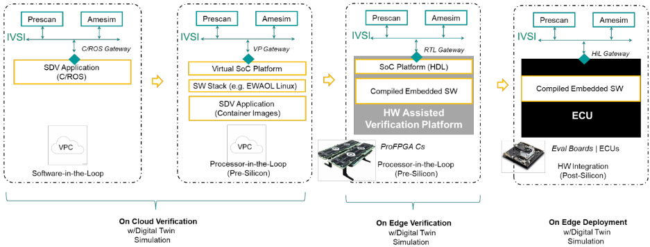
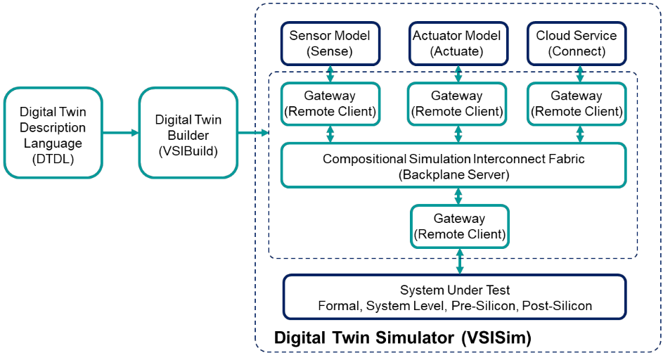
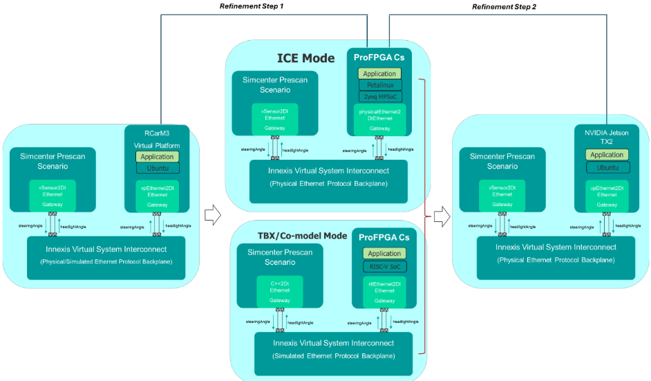
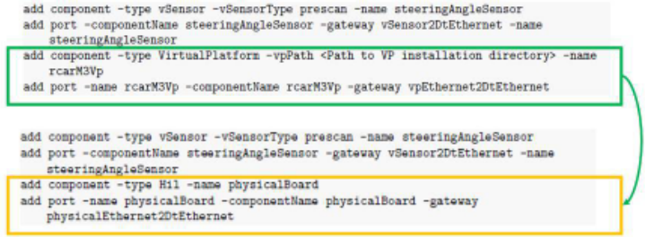
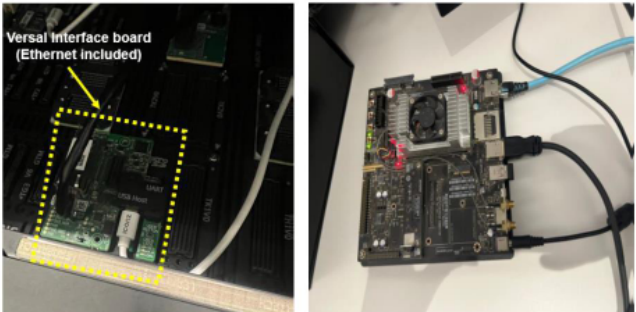
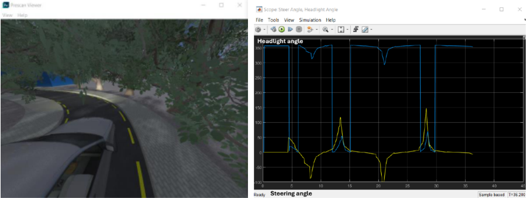

利用数字孪生仿真增强汽车 ECU 设计：Virtual Platform、FPGA 原型与边缘设备配置的对比研究
汽车 ECU 复杂度上升，要求 pre-silicon 与 post-silicon 开发阶段无缝衔接。论文提出基于 Digital Twin 仿真的方法：以 gateway 概念、DTDL 描述语言和自动化 flow 三大支柱构成互连框架，将 Simcenter Prescan 场景仿真器与三种 ECU 表示对接——RCarM3 Virtual Platform、proFPGA CS FPGA 原型（Petalinux/Zynq MPSoC 走 ICE 物理以太网网关，RISC-V SoC 裸机走 co-model channel/TBX）以及 NVIDIA Jetson TX2 边缘设备。三种配置复用同一激励与 ego vehicle 动力学，切换平台仅需修改两行 gateway 配置。自适应大灯用例全流程跑通，验证了激励跨平台保持能力；正文提及三平台 50 秒场景对比（Table I）但未给出量化数据。对团队的价值在于 FPGA 原型/Emulation 平台与统一激励源结合的跨平台验证模式，而非汽车应用本身。
汽车 ECU 开发需经历 MiL/SiL/PiL/HiL/实车多阶段流程，如何在 Virtual Platform、FPGA 原型等 pre-silicon 表示与 NVIDIA Jetson TX2 等 post-silicon 实物之间无缝过渡，并在不同平台间保持一致的验证场景与激励、最大化复用已有工作，以加速开发并提升可靠性。
构建 Digital Twin 互连框架，基于三大支柱： gateway 概念——每个数字孪生组件端口经 gateway 完成数据转换与路由，分为 Language2Protocol（C++/C#/SystemC/Python/ROS）、Pre-Silicon（VP、RTL）、Post-Silicon（物理）与 Specialized（传感器/执行器/云服务）四类，支持 Ethernet、CAN-FD、LIN、GPIO、I2C、SPI、AXI 等协议； DTDL（Digital Twin Description Language）描述组件间连接关系； 自动化 flow 解析 DTDL 自动生成 backplane server 与远端 gateway 基础设施，由统一 timing 引擎管理仿真时间。案例中 Simcenter Prescan 提供场景与传感器数据，经模拟或物理 Ethernet backplane 连接 RCarM3 VP、proFPGA CS（Petalinux/Zynq MPSoC + ICE 物理以太网网关；RISC-V SoC 裸机 + co-model channel/SV-DPI）与 Jetson TX2，实现 plug-and-play 式平台切换。
未在论文中说明：正文提及 Table I 对三种平台在 50 秒场景下做了对比分析，但未提供任何具体量化数据
定性结果：系统在三种配置下 fully operational，满足在 Virtual Platform、Pre-Silicon 与 Post-Silicon 间保持相同激励的判据
定性结果：平台切换仅需修改两行 gateway 配置（如 Virtual Platform 到 Physical Board 或到 RTL 实现），即插即用
相对已有工作 [6,7] 的组合式仿真互连框架，本文将其扩展到 pre-silicon/post-silicon 集成：在该框架中接入 proFPGA CS FPGA 原型（含 ICE 物理以太网网关与 co-model channel/TBX 支持）与 NVIDIA Jetson TX2 实物，实现 VP→原型→实物间激励、机电模型等数字孪生组件的完整复用；并强调采用最新 Veloce proFPGA CS 硬件搭配 Versal 接口板（含以太网接口）作为关键连接能力。
相关度级别：high
命中能力域：2.4 设计验证方法学 | 2.6 仿真性能与加速器 | 2.7 EDA/验证自动化与 AI 辅助
理由：直接命中 2.6：论文核心硬件是 FPGA 原型/Emulation 平台（proFPGA CS、Veloce proFPGA CS + Versal 接口板），并使用 ICE、co-model channel、TBX、SV-DPI 等速度桥接与测试激励加速接口，与团队 FPGA 原型/Emulation 能力域直接对应；同时命中 2.4（跨 pre-silicon/post-silicon 平台保持统一激励的验证方法学）与 2.7（DTDL 驱动的连接基础设施自动化生成、可复用框架）。对团队的价值不在汽车 ECU 应用本身，而在'同一场景激励贯穿仿真/Emulation/原型/实物'的模式：可映射到存储/互连 IP 在仿真、Emulation 与 FPGA 原型上复用同一 traffic 场景做功能与性能对比；gateway 对模拟/物理协议（Ethernet、AXI 等）的抽象也与 IP 原型中的 speed bridge/transactor 思路相通。局限是案例应用简单、无量化数据，且深度绑定 Siemens 工具链。
建议动作：作为方法参考存档
Sara M. Abd AlWahab ∗ †, Mohamed AbdElsalam ∗ , Ahmed H. Khalil†, Hassan Mostafa†
{sara.abdalwahab, mohamed.abd_el_salam_ahmed}@siemens.com, hmostafa@uwaterloo.ca
†开罗大学电子与通信工程系，埃及开罗
∗西门子数字化工业软件（Siemens Digital Industries Software），埃及开罗
摘要 - 汽车电子控制单元（Electronic Control Unit, ECU）日益增长的复杂性，要求流片前（pre-silicon）与流片后（post-silicon）设计阶段之间实现无缝集成，以加速开发并提升可靠性。本文提出了一种利用数字孪生仿真（Digital Twin Simulation）来弥合这一差距的新方法。我们通过一个自适应前照灯应用，在三种采用不同配置的ECU表示形式上演示了该方法：虚拟片上系统（SoC）平台、在接口通信扩展（Interface Communication Extension, ICE）或协同模型通道/测试平台加速（Testbench Acceleration, TBX）支持下运行的现场可编程门阵列（FPGA）原型验证系统（流片前），以及边缘设备NVIDIA Jetson TX2（流片后）。每种配置均保持来自场景仿真器的相同激励，并使用相同的自车动力学，从而支持对ECU设计的渐进式细化与性能评估。这项工作有助于构建一个可扩展且可复用的汽车ECU验证与部署框架。
关键词 - 汽车ECU，虚拟平台，FPGA原型验证，数字孪生仿真。
在汽车行业中，电子控制单元（ECU）的开发必须与真实世界的车辆动力学和运行环境紧密集成，以确保功能可靠性、安全性和性能。数字孪生通过实现物理系统与其虚拟对应体之间的持续同步，在实现这种一致性方面发挥着关键作用，从而支持跨产品、过程和系统层面的预测性验证与生命周期优化 [1,2]。
现代ECU设计通常遵循结构化的多阶段开发流程，包括模型在环（MiL）、软件在环（SiL）、处理器在环（PiL）、硬件在环（HiL）以及实车测试等阶段。这种系统化的方法使工程师能够逐步验证控制算法和系统行为——从虚拟仿真环境到物理硬件原型——从而确保功能正确性和鲁棒性。实施这种集成了仿真、快速控制原型和硬件验证的结构化开发方法，需要一个灵活、可扩展且可复用的ECU验证与部署框架。数字孪生仿真可以在此框架中发挥关键作用，将流片前和流片后的设计与传感器、场景和机电一体化仿真连接起来。
数字孪生是物理资产的虚拟副本，能够模拟其行为，以便在假设场景和真实场景下更好地评估和理解其运行情况 [3, 4]。数字孪生模拟真实世界运行条件和系统行为的能力，为深入洞察设计的性能特征提供了极大帮助。此外，构建一种基于数字孪生的方法，将在云端开发的软件部署到边缘ECU的流片前表示上，其优势在于能够在制造之前评估ECU的不同设计架构。
本文提出了一种新颖的方法，利用数字孪生仿真将ECU的流片前和流片后阶段无缝集成。所提出的数字孪生框架通过其可灵活适配的配置架构展现了卓越的灵活性，能够在多个平台和开发阶段之间实现无缝验证。
这种设置使得能够在虚拟平台仿真、采用接口通信扩展（ICE）或 Co-model 通道/测试台加速（TBX）[5] 运行的FPGA原型验证平台以及实际板卡实现之间轻松切换，同时最大化不同配置之间可复用的工作量。这种统一的方法确保验证场景在所有平台上保持一致，同时底层基础设施可以轻松修改，以适应不同的验证需求和调试需求。
在 [6, 7] 中，我们提出了一种组合式仿真互连框架，用于探索从云端到边缘的软件定义汽车实现方案，如图 1 所示。该框架支持异构客户端的连接，以在不同抽象层次上创建车辆电子控制单元（ECU）的数字孪生，并将其连接到真实的交通场景仿真器、传感器模型和机电一体化系统。
在本文中，我们将这项工作扩展到流片前/流片后集成，采用带有 ICE 接口的 ProFPGA 以及 NVIDIA Jetson TX2 开发板的硬件集成，以展示如何从一个 ECU 设计表示无缝迁移到保真度更高的表示，同时保留上一步骤中的激励、机电一体化组件以及其他数字孪生组件。

该框架允许连接不同类型的客户端，例如传感器/场景仿真器、机电一体化系统仿真器、仪表盘软件、云服务以及计算/思考模块，这些客户端可处于不同的抽象层次，包括 C/C++ 模块、Python、任何具备 C/C++/Python 接口的平台（例如 ROS）、虚拟 SoC 平台、运行于数字仿真器/硬件辅助验证平台上的 RTL 设计，以及通过物理连接（例如以太网、CAN）接入的外部硬件板卡 [8]。
该框架背后的设计方法学基于三大使能支柱：网关概念、数字孪生描述语言（DTDL）和自动化流程 [8]，如图 2 所示。
每个数字孪生组件端口都通过“网关”连接到背板服务器。网关执行数据转换与路由，以对接仿真和物理通信协议。网关分为 Language2Protocol（C++/C#/SystemC/Python/ROS）、Pre-Silicon（VP、RTL）、Post-Silicon（物理）和 Specialized（传感器、执行器、云服务、第三方工具）。互连背板所支持的通信协议例如包括：以太网、CAN-FD、LIN、GPIO、I2C、SPI 和 AXI。

这是一种中间的专有语言格式，系统建模语言可以在其之上构建。它定义了不同数字孪生组件之间的连接关系。有关该语言语法和语义的细节超出了本文的范围。
该流程主要简化了背板服务器和远程客户端网关基础设施的生成，而这些基础设施正是连接电子控制单元（ECU）异构组件所需的。
总而言之，用户的设计输入是用于描述数字孪生架构的数字孪生定义语言（DTDL），以及一个解析该语言并生成连接不同模型与工具所需基础设施的构建器；随后，用户再次发挥作用，插入其被测系统（System Under Test, SUT）或被测设计（Design Under Test, DUT），并启动整个组合式仿真的运行——由数字孪生仿真器通过统一的时序引擎管理仿真时间，同时支持对网关互连信号的可视化显示。
我们的案例研究围绕 Simcenter Prescan（一个基于物理的仿真平台，支持为高级驾驶辅助系统（ADAS）和自动驾驶车辆开发虚拟验证）[9] 构建，该平台通过互连框架连接到电子控制单元（ECU），并在每个设计阶段使用合适的网关。为实现实时应用执行，我们选择了 RCarM3 虚拟平台（Virtual Platform, VP）、proFPGA CS 板卡（流片前，带 ICE 接口或 Co-model Channel）以及 NVIDIA Jetson TX2 板卡（流片后）。每种配置均与相同的仿真场景集成，从而确保各测试环境之间的一致性。针对同一应用（自适应前照灯，Adaptive headlight），使用了不同的软件平台：RCAR M3 虚拟平台使用 Ubuntu Linux，带 ICE 接口的 ProFPGA Cs 使用 Petalinux/Zynq MPSoC，运行在带 Co-model channel 接口的 ProFPGA Cs 上的 RISC-V SoC 使用裸机二进制程序，NVIDIA Jetson TX2 则使用 Ubuntu Linux。
“自适应前照灯”（Adaptive headlight）应用从 Prescan 传感器接收转向角，然后计算前照灯角度，并通过以太网背板（仿真或物理）将其发送回场景仿真器。该客户端的基本操作如下：等待接收来自传感器的包含转向角的以太网数据包，根据转向角数值计算前照灯角度，并将新的前照灯角度数值发送给场景仿真器，以改变汽车的前照灯角度。
互连框架通过以太网协议实现组件之间的无缝通信，同时，诸如 headlight Angle 和 steering Angle 等数据信号在各配置之间传输。图 3 展示了不同平台之间的转换路径。

我们使用图 4 中描绘的 DTDL 定义了两个具有相应网关类型的端口。这包括通过指定信号和方向来配置端口，并根据所使用的协议建立数据交换，该协议可以是物理以太网协议或仿真以太网协议。
请注意，这只需更改两行配置即可轻松实现（例如，在物理以太网背板上从虚拟平台切换到物理板卡，或在仿真以太网背板上从虚拟平台切换到寄存器传输级（RTL）实现）。这种设置被视为一种即插即用（plug-and-play）的方法，只需更改网关类型即可。

将物理以太网网关融入数字孪生仿真架构带来了显著优势，可提升验证环境的保真度与实用性。这种集成实现了对真实世界网络行为的建模。物理网关充当虚拟域与物理域之间的关键桥梁，支持真实的数据交换，并使得对复杂网络场景的验证成为可能，而这些场景在仿真环境中难以复现。另一方面，采用仿真环境则可实现与支持 SV-DPI/Co-model 通道接口的硬件辅助验证（Hardware Assisted Verification）平台的连接。
搭载应用处理单元（APU，Application Processing Unit）的 proFPGA CS Petalinux 运行频率为 1.4 GHz。图 5 展示了连接至 EB-FM-CS-XCVP-R1 扩展板（包含以太网接口）的 proFPGA CS 硬件设置，以支持物理以太网网关的连接。该设置的新颖之处尤其在于采用了最新的 Veloce proFPGA CS 硬件 [10]，并搭配包含以太网接口的 Versal Interface 板 [11]，从而为现代基于 FPGA 的原型验证系统提供了至关重要的连接能力。
这些扩展通过实现支持多种速度与协议的可配置以太网接口来增强验证环境，使 FPGA 原型与外部系统（在本例中即物理以太网网关）之间能够进行实时通信；此外，它还可通过不同的 ICE 接口（例如 USB 接口）用于其他协议，这体现了此类原型验证平台所提供的高度灵活性。图 5 还展示了与 NVIDIA Jetson TX2 的连接设置，以及在 Ubuntu 操作系统上编译自适应前照灯应用的 C 应用程序。

该系统已完全可运行，包括传感器数据、Simcenter Prescan 模型以及图 3 所示所有配置下的 C 应用程序，满足了能够在不同 ECU 设计实现——虚拟平台、硅前（Pre-Silicon）与硅后（Post-Silicon）——之间保留激励的准则。图 6 展示了来自 Prescan 的场景仿真结果以及来自 MATLAB Simulink 的信号示波器结果。

如表 I 所示，对这三种实验平台进行了对比分析，展示了三种平台在运行时长为 50 秒的场景下的差异。
| Virtual Platform | Veloce proFPGA CS | NVIDIA Jetson TX2 | |
|---|---|---|---|
| Wall clock time | 2350.283 (longest time) | 1291.818 (substantial improvement) | 1274.58 |
| Gateway type | Ethernet simulated | Ethernet physical | Ethernet physical |
| OS type | Ubuntu | Petalinux | Ubuntu |
| | Virtual Platform | Veloce proFPGA CS | NVIDIA Jetson TX2 |
本文成功展示了一种通过数字孪生仿真（Digital Twin Simulation）增强汽车电子控制单元（ECU）设计的新型方法。通过利用来自场景仿真器与自车（ego vehicle）动力学的一致激励，本研究展示了自适应前照灯应用从硅前（presilicon）阶段到硅后（post-silicon）阶段的无缝过渡。这一过渡仅需在互连背板上更换网关连接即可实现，凸显了所提出框架的可复用性与可扩展性。本工作的一个关键贡献在于将 FPGA 原型验证扩展板（FPGA prototyping Extension Boards）有效集成并应用于 ECU 设计方法之中，证明了其在弥合早期设计阶段与最终实现之间差距方面的价值。